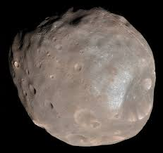
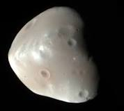
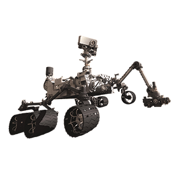

Mars is the fourth planet from the Sun and the second-smallest planet in the Solar System after Mercury. In English, Mars carries a name of the Roman god of war, and is often referred to as the "Red Planet" because the iron oxide prevalent on its surface gives it a reddish appearance that is distinctive among the astronomical bodies visible to the naked eye. Mars is a terrestrial planet with a thin atmosphere, having surface features reminiscent both of the impact craters of the Moon and the valleys, deserts, and polar ice caps of Earth.
| Mass | 641,693,000,000,000 billion kg |
| Equatorial diameter | 6805 km |
| Polar diameter | 6755 km |
| Equatorial circumference | 21,297 km |

Phobos is the innermost and larger of the two natural satellites of Mars, the other being Deimos. Both moons were discovered in 1877 by American astronomer Asaph Hall. Phobos is a small, irregularly shaped object with a mean radius of 11 km and is seven times as massive as the outer moon, Deimos.

Deimos is the smaller and outermost of the two natural satellites of the planet Mars, the other being Phobos. Deimos has a mean radius of 6.2 km and takes 30.3 hours to orbit Mars. Deimos is 23,460 km from Mars, much further than Mars's other moon, Phobos.
Oppurtunity
Curiosity

Sign up for our newsletter!